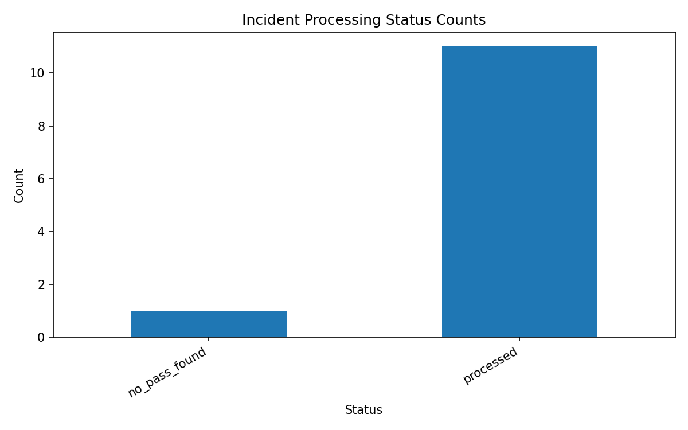
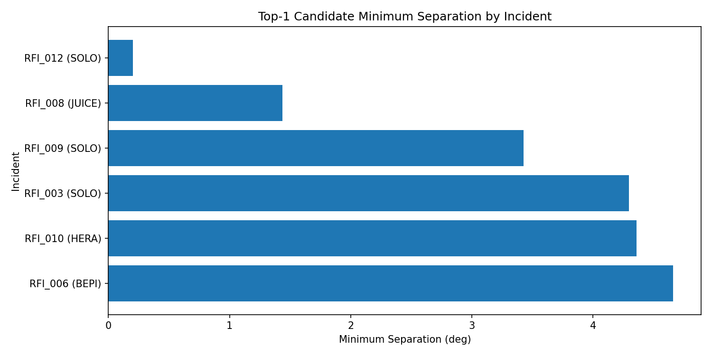
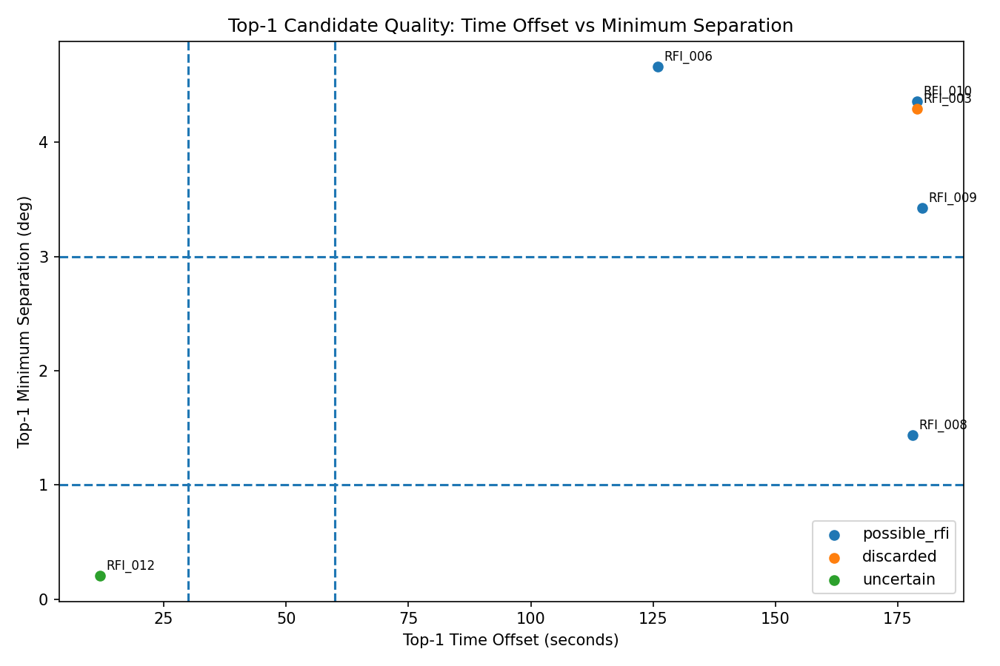

X axis: time offset in seconds. Y axis: minimum separation in degrees.

| incident_id | mission | mission_folder | label | status | quality_class | pass_name | num_candidates | top1_object_name | top1_min_sep_deg | top1_time_offset_sec | top1_risk_level | top1_groups |
|---|---|---|---|---|---|---|---|---|---|---|---|---|
| RFI_001 | HERA | HERA | uncertain | processed | weak_candidate | 20250219_155646_20250220_035646 | 0.000 | |||||
| RFI_002 | MEX1 | MEX1 | possible_rfi | no_pass_found | no_pass_found | |||||||
| RFI_003 | SOLO | SOLO | discarded | processed | weak_candidate | 20250327_070000_20250327_160000 | 1.000 | LEMUR-2-TEODOR | 4.297 | 179.000 | LOW | SPIRE |
| RFI_004 | SOLO | SOLO | possible_rfi | processed | weak_candidate | 20250418_070000_20250418_160000 | 0.000 | |||||
| RFI_005 | SOLO | SOLO | uncertain | processed | weak_candidate | 20250602_095457_20250602_185457 | 0.000 | |||||
| RFI_006 | BEPI | BEPI | possible_rfi | processed | weak_candidate | 20250715_113500_20250715_153000 | 1.000 | TANAGER-1 | 4.662 | 126.000 | LOW | PLANET |
| RFI_007 | MEX1 | MEX1 | uncertain | processed | weak_candidate | 20250715_163000_20250715_190000 | 0.000 | |||||
| RFI_008 | JUICE | JUIC | possible_rfi | processed | weak_candidate | 20250725_040118_20250725_122818 | 2.000 | COSMO-SKYMED 4 | 1.438 | 178.000 | MEDIUM | RESOURCE |
| RFI_009 | SOLO | SOLO | possible_rfi | processed | weak_candidate | 20250909_085220_20250909_175220 | 1.000 | METEOSAT-11 (MSG-4) | 3.426 | 180.000 | LOW | WEATHER |
| RFI_010 | HERA | HERA | possible_rfi | processed | weak_candidate | 20250915_101114_20250915_181114 | 1.000 | ELEKTRO-L 2 | 4.361 | 179.000 | LOW | WEATHER |
| RFI_011 | SOLO | SOLO | uncertain | processed | weak_candidate | 20251130_095814_20251130_155814 | 0.000 | |||||
| RFI_012 | SOLO | SOLO | uncertain | processed | strong_candidate | 20251230_040540_20251230_060546 | 4.000 | CSG-2 | 0.203 | 12.000 | HIGH | RESOURCE |
| incident_id | mission | mission_folder | label | rank | object_name | norad_cat_id | groups | min_sep_deg | time_offset_sec | risk_level |
|---|---|---|---|---|---|---|---|---|---|---|
| RFI_012 | SOLO | SOLO | uncertain | 1 | CSG-2 | 51444 | RESOURCE | 0.203 | 12.000 | HIGH |
| RFI_012 | SOLO | SOLO | uncertain | 2 | SMOS | 36036 | RESOURCE | 0.902 | 18.000 | HIGH |
| RFI_008 | JUICE | JUIC | possible_rfi | 1 | COSMO-SKYMED 4 | 37216 | RESOURCE | 1.438 | 178.000 | MEDIUM |
| RFI_009 | SOLO | SOLO | possible_rfi | 1 | METEOSAT-11 (MSG-4) | 40732 | WEATHER | 3.426 | 180.000 | LOW |
| RFI_012 | SOLO | SOLO | uncertain | 3 | TIANMU-1 16 | 58701 | WEATHER | 3.449 | 82.000 | LOW |
| RFI_008 | JUICE | JUIC | possible_rfi | 2 | SMOS | 36036 | RESOURCE | 3.718 | 112.000 | LOW |
| RFI_012 | SOLO | SOLO | uncertain | 4 | LEMUR-2-PETERG | 42841 | SPIRE | 3.886 | 84.000 | LOW |
| RFI_003 | SOLO | SOLO | discarded | 1 | LEMUR-2-TEODOR | 66768 | SPIRE | 4.297 | 179.000 | LOW |
| RFI_010 | HERA | HERA | possible_rfi | 1 | ELEKTRO-L 2 | 41105 | WEATHER | 4.361 | 179.000 | LOW |
| RFI_006 | BEPI | BEPI | possible_rfi | 1 | TANAGER-1 | 60507 | PLANET | 4.662 | 126.000 | LOW |